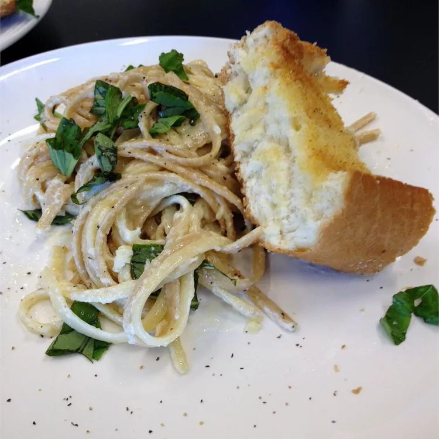

Our Chicken Alfredo Recipe

Everyone loves a good pasta dish, and Chicken Alfredo is a great choice whether you are cooking for yourself or have guests coming to visit. With only a few simple ingredients, you will be able to prepare this dish in no time at all.
What you will need
- 1 pound fettuccini pasta
- 1 pound chicken breast
- 1 1/2 cups butter
- 1 tbs vegetable oil
- 32oz whole milk ricotta cheese
- 1 pint heavy cream
- 1 tsp salt
- 1 cup grated Parmesan cheese
Steps
- Boil fettuccini for 8 to 10 minutes. Drain and set aside.
- Pour vegetable oil in a large frying pan and saute the chicken breast over medium heat. Flip over the breast after 4 minutes. Remove from the pan when the internal temperature reaches 165 degrees fahrenheit. Allow chicken to rest for 5 minutes.
- In a large saucepan, combine ricotta cheese, cream, salt, Parmesan cheese and butter. Warm over medium-low heat until the ingredients combine.
- Add cooked fettuccini to sauce, stirring regularly until the fettuccini heats up.
- Slice the chicken breast in quarter inch strips.
- Scoop fettuccini and sauce into dish. Place chicken strips on top.
- Serve and enjoy.
* The inspiration and image for this practice recipe comes from allrecipes.com.